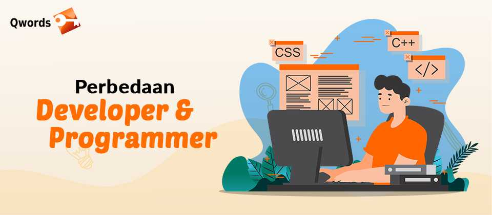

Apa itu Developer? Inilah Perbedaan Developer dan Programmer
Banyak orang mungkin tidak bisa membedakan antara apa itu developer dan programmer dalam dunia IT. Padahal, sebenarnya banyak perbedaan developer dan programmer yang mendasar.Orang yang tak mengetahui kedua pekerjaan ini akan mengira bahwa developer dan programmer bertugas sama-sama membuat aplikasi.
Di dunia IT sendiri, banyak pekerjaan atau posisi berbeda-beda yang salah diartikan atau disamaratakan oleh orang-orang awam yang memang tidak mengerti perbedaannya. Lalu apa yang mendasari beda antara seorang developer dan seorang programmer? Simak penjelasan di bawah ini.
Apa itu Developer?
Apa itu Developer? Developer adalah pekerjaan yang berada satu tingkat di atas programmer. Seorang developer bisa diartikan sebagai programmer yang lebih terlatih, tidak hanya mengerti Bahasa pemrograman, namun juga bisa membangun sebuah sistem.
Yang menjadi perbedaan developer dan programmer, Developer biasanya sudah cukup berpengalaman menyelesaikan permasalahan dan juga punya kerja yang terstruktur dan disiplin. Berikut adalah tugas-tugas developer, yang kami contohkan menjadi seorang web developer, di antaranya:
1.Merancang Kode yang Efisien
2.Merancang Web dengan kode HTML standar
3.Untuk menghasilkan web yang menarik, maka perlu bekerja sama dengan desainer web dan bagian pemrograman
4.Melakukan komunikasi yang intens kepada mitra agar tetap terjaga hubungan yang baik, yang bertujuan agar website semakin dikenal. Penyebaran konten juga semakin luas.
5.Klasifikasi berbagai program software dan juga maintenance software.
6.Menyiapkan rencana darurat jika website down atau mengalami peretasan.
7.Melakukan pemeliharaan atau upgrade website yang sudah dibuat.
8.Mengelola tim, membagi-bagi porsi pekerjaan dalam sebuah proyek pembuatan website.
Apa itu Programmer?

Programmer merupakan pekerjaan seseorang dengan keahlian memahami Bahasa pemrograman dalam sebuah system komputer. Biasanya seorang programmer berasal dari jurusan ilmu komputer atau informatika saat menempuh studi sarjana.
Atau jika tidak menempuh studi di universitas, seorang programmer berasal dari SMK yang fokus di bidang informatika, orang yang belajar dari kursus, ataupun otodidak untuk menguasai Bahasa pemrograman.
Ada banyak bahasa pemrograman yang bisa dipilih jika Anda menempuh studi sebagai programmer, di antaranya Java, PHP, C, C++, Pascal, Phyton dan lain-lain.
Calon programmer akan mempelajari semuanya, sebelum akhirnya ia memfokuskan dengan satu Bahasa pemrograman yang ia paling kuasai.
Berikut ini beberapa tugas dari seorang programmer, di antaranya adalah:
1.Mereview kebutuhan. Seorang programmer mesti mendefinisikan kebutuhan sebelum membuat aplikasi. Sehingga aplikasi yang dibuat nantinya tepat sasaran dan pengguna bisa puas menggunakannya.
2.Merancang tampilan program. Tampilan program menjadi tanggung jawab seorang programmer. Programmer bertugas membuat sketsa alur aplikasi dan grafis serta flowchart
3.Menulis kode program. Setelah merancang tampilan program, programmer kemudian harus menulis kode program. Biasanya programmer telah menguasai Bahasa pemrograman tertentu sehingga bisa mengerjakan hal ini.
4.Debug program. Programmer dapat melakukan debug pada aplikasi yang dirancangnya, yakni pengecekan apakah ada kerusakan atau gangguan dalam aplikasi. Jika ada kesalahan, programmer bisa mengubah atau mengevaluasi Bahasa pemrograman yang sudah ditulis.
5.Melakukan pengujian program. Ini adalah tahap akhir dari tugas seorang programmer setelah membuat aplikasi. Tahap pengujian program sebelum program itu dirilis, sehingga bisa diketahui manfaat sebuah program tersebut terhadap penggunanya.
Perbedaan Programmer dan Developer
Setelah mengetahui pengertian masing-masing dari developer dan programmer. Maka Anda telah memahami dasar perbedaan developer dan programmer. Developer bisa dipahami sebagai orang yang menyusun struktur dalam pengembangan sebuah aplikasi.
Sedangkan programmer adalah orang yang hanya fokus menulis sebuah kode dari sebuah program aplikasi. Dari segi kapasitas saja, developer bisa dikatakan lebih besar daripada programmer.
Seorang programmer bekerja di bawah arahan seorang developer untuk merancang sebuah program atau aplikasi.